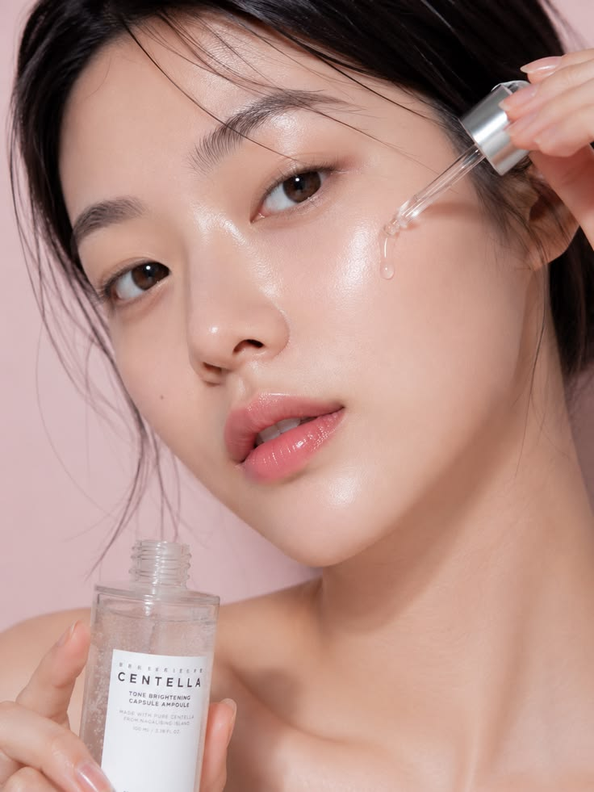

What is PDRN?
PDRN stand for Polydeoxyribonucleotides, a mixture of purified DNA fragments that has quickly become one of the most talked about ingredients in Korean skincare, appearing in everything from serums and creams to professional aesthetic treatments. It is typically derived from the sperm of salmon or trout, and has been traditionally used in beauty injections to treat wrinkles, enlarged pores, scars, and rough skin texture.
PDRN stand for Polydeoxyribonucleotides, a mixture of purified DNA fragments that has quickly become one of the most talked about ingredients in Korean skincare, appearing in everything from serums and creams to professional aesthetic treatments. It is typically derived from the sperm of salmon or trout, and has been traditionally used in beauty injections to treat wrinkles, enlarged pores, scars, and rough skin texture.
But as its popularity grows, so do the questions.
You may be wondering:
- Is PDRN always derived from salmon?
- Can I enjoy the benefits of PDRN without using animal-derived ingredients?
- Are the vegan alternatives as effective?
What Is Phyto-PDRN?
Phyto-PDRN refers to plant-derived or non-animal PDRN-inspired technology designed to provide similar skin-conditioning benefits without relying on salmon-derived DNA.
Phyto-PDRN may be produced through plant-based biotechnology or other non-animal processes, and different sources provide various additional benefits to restoring the skin’s natural barrier:
- Ginseng Root to support skin elasticity
- Rose for antioxidant protection
- Green Tea for soothing and anti-inflammatory properties
- Camellia for collagen support
- Berries and Grains to reduce irritation and uneven skin
This makes it an appealing choice for consumers who:
- Prefer vegan-friendly beauty products
- Avoid marine-derived ingredients
- Have ethical or dietary concerns
- Simply want more ingredient transparency
Phyto-PDRN and the Rise of Vegan K-Beauty

Korean skincare has long been known for pushing ingredient innovation. Just as fermented ingredients, centella asiatica, and multi-molecular hyaluronic acid became global trends, vegan biotechnology is becoming an increasingly important area of development.
Phyto-PDRN fits naturally into this movement by offering another option for consumers seeking modern, science-inspired skincare.
What Are the Benefits?
While benefits depend on the specific ingredient and formulation, products featuring Phyto-PDRN are often designed to support:
- Skin hydration
- A smoother-looking complexion
- Healthy-looking skin
- Skin conditioning
- A more radiant appearance